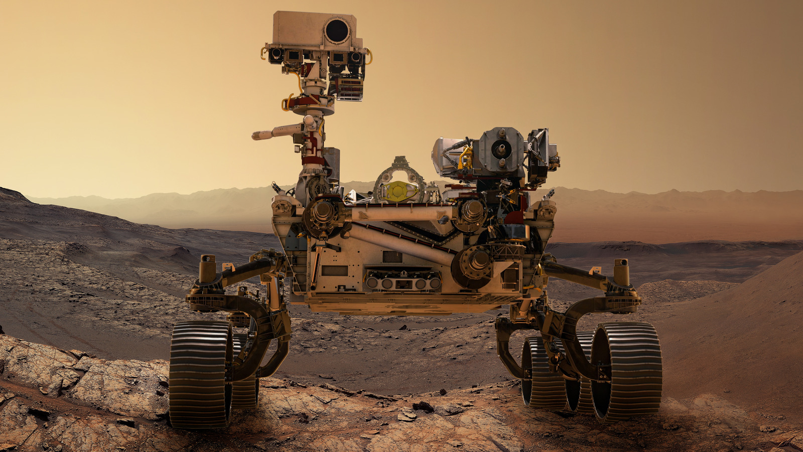

Perseverance Rover
Mission Goals
Perseverance’s mission is to search for signs of ancient microbial life and collect rock samples for future return to Earth.
Launch and Landing
Launched on July 30, 2020, Perseverance landed on February 18, 2021 in Jezero Crater using a sky crane, just like Curiosity.
Major Discoveries
- Collected core samples for possible return to Earth.
- Found signs of an ancient river delta.
- Captured high-res video and sound from Mars.
Technical Highlights
- Includes MOXIE to create oxygen from Martian air.
- Carried the Ingenuity helicopter — the first aircraft to fly on another planet.
- Advanced sampling system and AI navigation.